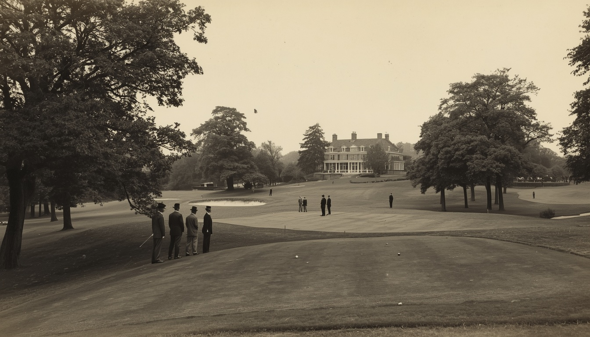
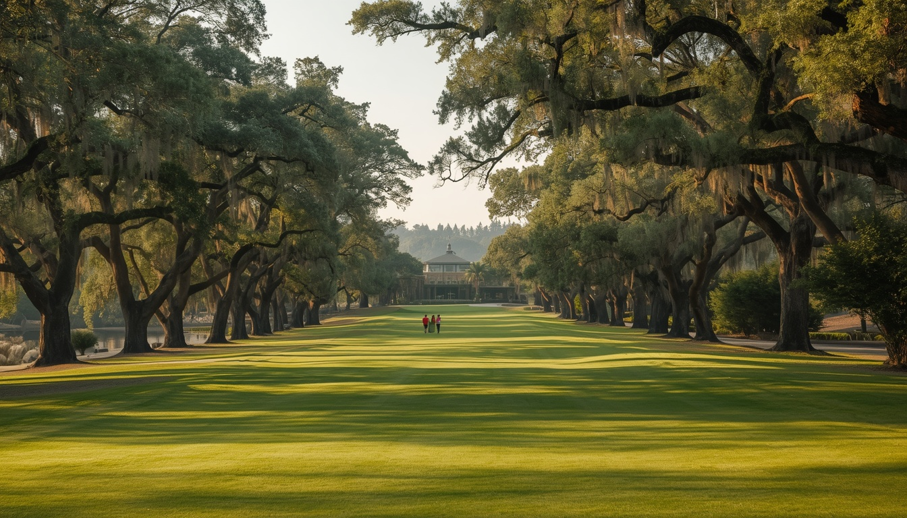

A legacy of golf, community, and tradition since 1924.

Fictional archival imageA parkland idea.
Alderwick Golf Club was established in 1924 around a simple idea: create a thoughtful parkland course and a place where the game could become part of community life.
The early routing followed the natural fall of the land through young stands of oak and alder. As the trees matured, so did the character of the course — shaded corridors, defined angles, and greens that reward the well-considered shot.
Carried forward.
Generations of members have walked these fairways, and the club has been careful to preserve what makes them special while keeping the course healthy for the years ahead.
Clubhouse traditions — the welcome, the table, the quiet celebration of a good round — remain at the heart of the club. Modern stewardship keeps Alderwick grounded in the game while looking to its second century.
The same land, a century on.
The mature tree corridors first planted in the 1920s now define the club's most elegant holes — a living link between Alderwick's origins and the course played today.

Club founded
Alderwick opens as a parkland course and community club.
Clubhouse expanded
The dining room and veranda are added to the original clubhouse.
Practice grounds improved
The range and short-game areas are rebuilt for year-round practice.
Course stewardship plan introduced
A long-term plan guides tree health, turf, and green complexes.
A modern club grounded in the game
Alderwick balances its heritage with a welcoming, contemporary club life.
The game continues.
Alderwick remains a place shaped by the course, the people who play it, and the traditions they carry forward.